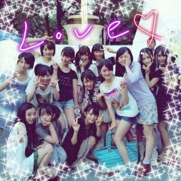

| 2012/07 30 Mon | 川村真洋 このお気持ち,言葉だけぢ ゃあらわせない>ω<))) ろ ってぃー♪ |
ほっほぉぉぉい (〃ε〃)))♪
皆さま こんにちわっ。
ろってぃ− です ☆． * ゜．゜*
おつかろってぃ−*・ω・*
はぁ〜い,
昨日(長崎) 一昨日(名古屋)と
野外ライブをしてきましたー><
名古屋 長崎
あっちかったよほんと!!
みんな リハの時から舞台裏で
一生ぶんの汗流してるんぢゃないかっ 笑!・o・
って位の勢いで
着替えたり色々してました*^^*
でもねえ,
今回のライブは
初めて味わう感じの
楽しさだったなあ=・ω・=
すっっごい楽しかった♪!
公開リハなのに
普通に素っぴんで
出ちゃったしね>ω<笑
(名古屋)
一曲目 おいでシャンプーは
センターのれいかのポジションを
つとめましたっ☆・∀・)>
そして
二曲目 三曲目
ぐるぐるカーテンと 狼に口笛をは
もとの自分のポジション。
四曲目 走れbicycle は
かなりんのポジション☆
最後五曲目
会いたかったかもしれない は
だれポジとかは
はっきりないんだけど
センターわりの
ポジションをやらせて
いただいたりしました*・ω・*
(長崎)
一曲目 おいシャンは
ゆったんポジ♪
二曲目 ぐるカーは
まひろポジ♪
三曲目 涙がまだ悲しみだった頃
まひろポジ♪(発ひろぉぉ)
四曲目 走バイは
かなりんポジ♪
皆様っ )))
本当にありがとうございました^^
すっんごい暑かったでしょ?
大丈夫でした(> <)?
皆様が盛り上がっているの
めちゃくちゃうれしかたーー★☆★
本当に テンションあがった*^^*
やっぱライブ最高だ=・ω・=
まひろのパフォーマンス
どうでしたかぁ?´・ω・☆
これからもっともっと
いっぱいしていきたい♪
今回これなかった皆様も、
また今度 絶対
一緒にライブ楽しみましょうねっ
〃ε〃
それに
名古屋では味噌かつ
長崎では 角煮まん
などなどご当地グルメ
食べてきましたよ*^^*
すっごい
美味しかったo・〜・o
名古屋終わって
舞台裏で皆と撮りました >ω<

皆 いい表情してる・∀・
まひろどこにいるか
分かるぅ*・ω・*?
左下だよぉ〜
せいらりんとぉ〜〃∀〃))
らりん大好き〜♪〃ω〃
あっ, まひろ
8月3日と 9日
東京タワーでラジオに出るので
皆様 是非きてくださいねん*・ω・*
早く皆様に会いたいから...♪
待ってまぁす,
また更新するね^^?
のしっ♪)))